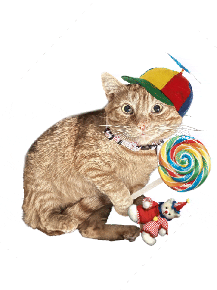

multimedia artist :]
Croissant Cat

The title of my work is Croissant Cat, and it's a GIF of my cat Milo wearing a propeller cap and holding a colorful lollipop
and a clown bear plushie transforming into a croissant after a large pixelated explosion.
My process to make this started out with the idea phase. I didn't really know what to make at first so I talked to one of my friends about it.
After a conversation and sharing some memes, I'd settled on the idea of making my cat Milo the focus because I have a ton of funny photos of him
readily available. I then took inspiration from a few of the memes that we'd shared, such as the pixelated explosion and an image of a cat fading
into a loaf of bread. I also took the known meme visuals of a propeller cap and big lollipop which is usually paired together to evoke an innocent
mood. Additionally, my cat tends to be a bit illogical in his approach at times when he does things which is commonly associated with orange cats
not being the smartest, so combining all of these visual elements creates the new meaning of this cat being especially whimsical and then inexplicably
turning into bread.
To start out actually making the GIF I gathered all of the images that I would need to mashup into the final product off of google and an image of
my cat where he was making a funny expression whilst lying down. From there, I cut out the images' backgrounds and then used masks to make the hat
and lollipop fit onto my cat, as well as softening the edges of the parts the subject selection missed. I then also imported an image of a croissant
into my canvas and scaled it up to be similar size to the final image and exported a version with my cat and a version with only the croissant. Finally,
I threw them into After Effects and arranged them in the timeline with the explosion GIF overlaid to hide the swap from cat to bread, and then used Media
Encoder to export the final product.
This piece is ultimately meant to be a tribute to my cat at home. He's been with me for two years now, and now living on campus at SJSU is my first time
really away from him while my parents take care of him. He was originally a street cat who had taken a liking to me, and I was eventually able to bring
him in and take care of him properly indoors ever since. He's a very shy but loving cat and often sleeps with or next to me in a curled up way which makes
him look like a croissant with his fur pattern, hence the use of it in the composition. It's overall meant to evoke the energy that Milo brings to my life,
being very silly at times but very lovey and kind at heart.